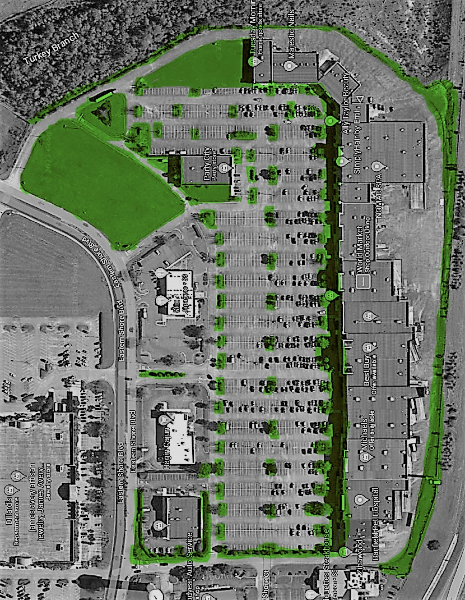
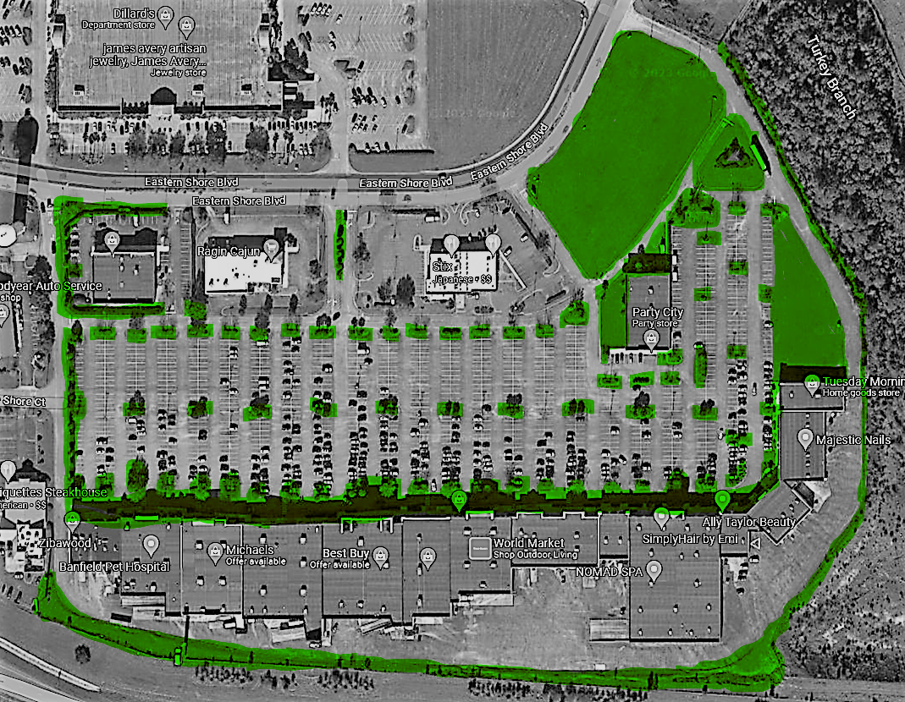

Commercial
If you're a business owner, we understand the importance of having a
lawn that looks its best. That's why we offer our Commercial Lawn Care
Service to businesses of all kinds, from local shops to larger hotels
and apartment complexes. We'll work closely with you to make sure that
your lawn reflects your business's values and creates a welcoming
atmosphere for your clients.
When you choose Wilson Landscape and Lawn Service, you can relax and
enjoy a beautiful lawn without worrying about all the hard work. Our
team will take care of everything, from start to finish, so you can
focus on what you do best – running your business.


- • Cutting
- • Trimming and blowing
- • Plant bed weeding
- • Edging beds and walkways
- • Fertilizing
- • Shrub and tree pruning
- • Mulching
- • Weed Control
- • Debris removal
- • Palm tree trimming